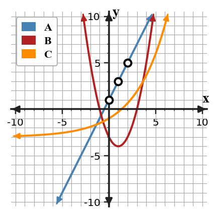
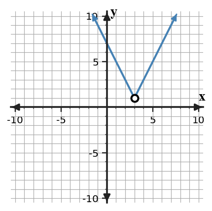

A source-grounded study guide for vocabulary, rules and relationships, section targets, representations, common misconceptions, and reasoning across DOK levels.
Unit at a Glance
What ties Unit 8 together?
Students will analyze, model, and interpret situations using linear, quadratic, exponential, absolute value, and piecewise function representations to select appropriate models and support conclusions.
1Select a familyUse differences, ratios, shape, and context.
→
2TransformTrack shifts, scales, and key points.
→
3Model special behaviorUse absolute value and piecewise thinking.
→
4SynthesizeBuild, test, compare, and defend models.
Unit Vocabulary & Representations
Words and representations worth knowing cold
These source-supported terms and representation types organize the work across the unit.
8.1 Selecting Appropriate Models
Linear, quadratic, and exponential graphsTables showing first differences, second differences, and ratiosEquations in familiar function formsContext descriptions with quantities and constraintsVerbal claims about growth, change, and turning behavior
8.2 Transformations Across Function Families
Parent function graphsTransformed equations such as $f(x)+k$, $f(x-h)$, and $af(x)$Key points before and after transformationsFeature tables for intercepts, vertex, asymptote, and directionContext descriptions involving shifted or scaled models
8.3 Absolute Value Functions and Piecewise Thinking
Absolute value graphs with a vertexEquations using $|x-h|$ structurePiecewise rules and interval restrictionsTables showing symmetry or two ratesContexts involving distance from a target or changing direction
8.4 Modeling Investigation
Real-world data tablesScatterplots or plotted coordinate pairsCandidate linear, quadratic, exponential, or absolute value modelsResidual-style observations about overprediction and underpredictionWritten interpretation of model parameters and limits
8.5 Function Synthesis and Capstone Analysis
Multiple function-family graphsTables, equations, and contexts used togetherFunction-feature summariesStudent-generated model comparisonsWritten reasoning about model choice and solution meaning
Rules, Forms & Relationships
The structures Unit 8 expects you to use
Use these relationships only in the situations where their structure applies. The section review below shows how they connect to representations and contexts.
Linear evidence
$\Delta y=\text{constant}$
Constant first differences over equal input steps support a linear model.
Quadratic evidence
$\Delta^2y=\text{constant}$
Constant second differences over equal input steps support a quadratic model.
Exponential evidence
$\frac{y_{n+1}}{y_n}=\text{constant}$
A constant ratio over equal input steps supports an exponential model.
Translations
$g(x)=f(x-h)+k$
The input shift $h$ is horizontal; the output shift $k$ is vertical.
Scale / reflection
$g(x)=af(x)$
The multiplier $a$ changes vertical scale and reflects the graph when negative.
Absolute value
$y=a|x-h|+k$
The vertex is $(h,k)$ and the two branches represent distance-like/two-direction behavior.
Students will determine whether a situation is best modeled by a linear, quadratic, or exponential function.
I can…
I can construct evidence from tables, graphs, and contexts to choose a linear, quadratic, or exponential model.
I can apply rate, second-difference, and ratio patterns to select an appropriate function family.
I can determine whether a chosen model is reasonable for a situation and its data pattern.
Summary
In this section, you practiced choosing model families by using evidence instead of guessing.
Strong work connects at least two representations, such as a table and equation, a graph and context, or a feature and a model family.
The most common error is trusting a surface clue without checking the mathematical pattern or feature.
Strong understanding means you can explain why a model, transformation, solution, or strategy fits the situation.

Pattern evidence for selecting a function family.
Key representations:Linear, quadratic, and exponential graphsTables showing first differences, second differences, and ratiosEquations in familiar function formsContext descriptions with quantities and constraintsVerbal claims about growth, change, and turning behavior
DOK 1
Recognize and interpret linear, quadratic, and exponential graphs and the basic features used in this section.
DOK 2
apply rate, second-difference, and ratio patterns to select an appropriate function family
DOK 3
determine whether a chosen model is reasonable for a situation and its data pattern
DOK 4
Sort situations by evidence rather than by surface words.
Common traps to avoid
Using only keywords
Why it is tempting: words like growth feel helpful. What to check instead: check differences, ratios, and graph shape.
Confusing faster growth with exponential
Why it is tempting: outputs can increase by larger amounts. What to check instead: look for a constant ratio.
Ignoring second differences
Why it is tempting: first differences may not be constant. What to check instead: compute second differences before choosing.
Overextending a model
Why it is tempting: predictions are easy to calculate. What to check instead: check whether the context has limits.
Students will analyze transformations across multiple function families.
I can…
I can build transformed function rules from parent functions across linear, quadratic, exponential, and absolute value families.
I can use key points and key features to graph transformations across multiple function families.
I can formulate a transformation description that connects parameter changes to key point shifts across function families.
Summary
In this section, you practiced transformations across function families by using evidence instead of guessing.
Strong work connects at least two representations, such as a table and equation, a graph and context, or a feature and a model family.
The most common error is trusting a surface clue without checking the mathematical pattern or feature.
Strong understanding means you can explain why a model, transformation, solution, or strategy fits the situation.
Transformation of a quadratic parent function.
Key representations:Parent function graphsTransformed equations such as $f(x)+k$, $f(x-h)$, and $af(x)$Key points before and after transformationsFeature tables for intercepts, vertex, asymptote, and directionContext descriptions involving shifted or scaled models
DOK 1
Recognize and interpret parent function graphs and the basic features used in this section.
DOK 2
use key points and key features to graph transformations across multiple function families
DOK 3
formulate a transformation description that connects parameter changes to key point shifts across function families
DOK 4
Move key points to create a transformed model for a situation.
Common traps to avoid
Inside-sign error
Why it is tempting: horizontal shifts feel reversed. What to check instead: check the new vertex or key point.
Mixing horizontal and vertical moves
Why it is tempting: both appear in the same equation. What to check instead: separate input changes from output changes.
Missing reflection
Why it is tempting: a negative sign can look like subtraction. What to check instead: identify whether the negative is outside the function.
Moving only one point
Why it is tempting: the vertex is easiest to track. What to check instead: confirm the whole graph moves consistently.
Students will analyze and model situations involving absolute value functions.
I can…
I can design an absolute value or piecewise representation for situations with distance, change in direction, or two-part behavior.
I can apply key features of absolute value graphs to interpret vertex, intercepts, and rate of change.
I can predict outputs and intervals from absolute value and piecewise rules in context.
Summary
In this section, you practiced absolute value and piecewise thinking by using evidence instead of guessing.
Strong work connects at least two representations, such as a table and equation, a graph and context, or a feature and a model family.
The most common error is trusting a surface clue without checking the mathematical pattern or feature.
Strong understanding means you can explain why a model, transformation, solution, or strategy fits the situation.

Absolute-value vertex and branches.
Key representations:Absolute value graphs with a vertexEquations using $|x-h|$ structurePiecewise rules and interval restrictionsTables showing symmetry or two ratesContexts involving distance from a target or changing direction
DOK 1
Recognize and interpret absolute value graphs with a vertex and the basic features used in this section.
DOK 2
apply key features of absolute value graphs to interpret vertex, intercepts, and rate of change
DOK 3
predict outputs and intervals from absolute value and piecewise rules in context
DOK 4
Model distance from a target value using absolute value.
Common traps to avoid
Only one solution
Why it is tempting: the positive answer is easiest to see. What to check instead: remember distance can go left or right.
Forgetting to split cases
Why it is tempting: absolute value hides two possibilities. What to check instead: write the positive and negative equations.
Not checking answers
Why it is tempting: both case solutions look valid. What to check instead: substitute into the original equation.
Misreading the vertex
Why it is tempting: any point on the V may stand out. What to check instead: identify the turning point and minimum output.
Students will create and analyze mathematical models using real-world data.
I can…
I can formulate a mathematical model from real-world data and state the assumptions used.
I can extend a model to make predictions within a reasonable domain.
I can critique how well a model fits data, constraints, and the situation being studied.
Summary
In this section, you practiced modeling with data by using evidence instead of guessing.
Strong work connects at least two representations, such as a table and equation, a graph and context, or a feature and a model family.
The most common error is trusting a surface clue without checking the mathematical pattern or feature.
Strong understanding means you can explain why a model, transformation, solution, or strategy fits the situation.
Data and candidate model fit.
Key representations:Real-world data tablesScatterplots or plotted coordinate pairsCandidate linear, quadratic, exponential, or absolute value modelsResidual-style observations about overprediction and underpredictionWritten interpretation of model parameters and limits
DOK 1
Recognize and interpret real-world data tables and the basic features used in this section.
DOK 2
extend a model to make predictions within a reasonable domain
DOK 3
critique how well a model fits data, constraints, and the situation being studied
DOK 4
Choose a model for a small data set and defend the choice with evidence.
Common traps to avoid
Switching variables
Why it is tempting: both quantities are in the table. What to check instead: ask which quantity is the input.
Overtrusting one point
Why it is tempting: a single point is easy to fit. What to check instead: use the full scatterplot pattern.
Assuming linear forever
Why it is tempting: a line is simple. What to check instead: check real-world limits and domain.
Ignoring outliers
Why it is tempting: most points show a trend. What to check instead: notice points that do not fit.
Students will synthesize understanding of function families and representations to solve complex problems.
I can…
I can construct a solution pathway that connects equations, graphs, tables, and contexts across function families.
I can use multiple representations to solve complex function problems and interpret results.
I can assess competing solution strategies and choose the representation that best supports the conclusion.
Summary
In this section, you practiced function synthesis by using evidence instead of guessing.
Strong work connects at least two representations, such as a table and equation, a graph and context, or a feature and a model family.
The most common error is trusting a surface clue without checking the mathematical pattern or feature.
Strong understanding means you can explain why a model, transformation, solution, or strategy fits the situation.
Multiple function families compared.
Key representations:Multiple function-family graphsTables, equations, and contexts used togetherFunction-feature summariesStudent-generated model comparisonsWritten reasoning about model choice and solution meaning
DOK 1
Recognize and interpret multiple function-family graphs and the basic features used in this section.
DOK 2
use multiple representations to solve complex function problems and interpret results
DOK 3
assess competing solution strategies and choose the representation that best supports the conclusion
DOK 4
Select efficient representations for multi-step function tasks.
Common traps to avoid
Using every representation
Why it is tempting: more work feels safer. What to check instead: choose the representation that reveals the needed feature.
Forgetting meaning of intersection
Why it is tempting: graphs crossing looks visual only. What to check instead: state equal input and equal output meaning.
Trusting estimates as exact
Why it is tempting: a graph looks convincing. What to check instead: verify with algebra or a table when exactness matters.
Matching by order
Why it is tempting: lists look aligned. What to check instead: scramble or justify by features.
Unit Mastery by DOK
A second way to organize the review
Sections tell you which topic you are reviewing. DOK tells you how deeply you need to use it.
DOK 1 · Recognize
Control notation and basic features
Recognize the key features and notation used in Selecting Appropriate Models.
Recognize the key features and notation used in Transformations Across Function Families.
Recognize the key features and notation used in Absolute Value Functions and Piecewise Thinking.
Recognize the key features and notation used in Modeling Investigation.
Recognize the key features and notation used in Function Synthesis and Capstone Analysis.
DOK 2 · Apply & Represent
Use procedures and representations
apply rate, second-difference, and ratio patterns to select an appropriate function family.
use key points and key features to graph transformations across multiple function families.
apply key features of absolute value graphs to interpret vertex, intercepts, and rate of change.
extend a model to make predictions within a reasonable domain.
use multiple representations to solve complex function problems and interpret results.
DOK 3 · Reason & Critique
Use evidence to defend or revise
determine whether a chosen model is reasonable for a situation and its data pattern.
formulate a transformation description that connects parameter changes to key point shifts across function families.
predict outputs and intervals from absolute value and piecewise rules in context.
critique how well a model fits data, constraints, and the situation being studied.
assess competing solution strategies and choose the representation that best supports the conclusion.
DOK 4 · Design & Synthesize
Build and connect models
Sort situations by evidence rather than by surface words.
Move key points to create a transformed model for a situation.
Model distance from a target value using absolute value.
Choose a model for a small data set and defend the choice with evidence.
Select efficient representations for multi-step function tasks.
Before the Summative
Can you do these without notes?
Vocabulary & Concepts
Selecting Appropriate Models
Transformations Across Function Families
Absolute Value Functions and Piecewise Thinking
Modeling Investigation
Function Synthesis and Capstone Analysis
Representations & Procedures
apply rate, second-difference, and ratio patterns to select an appropriate function family.
use key points and key features to graph transformations across multiple function families.
apply key features of absolute value graphs to interpret vertex, intercepts, and rate of change.
extend a model to make predictions within a reasonable domain.
use multiple representations to solve complex function problems and interpret results.
Reasoning & Modeling
determine whether a chosen model is reasonable for a situation and its data pattern.
formulate a transformation description that connects parameter changes to key point shifts across function families.
predict outputs and intervals from absolute value and piecewise rules in context.
critique how well a model fits data, constraints, and the situation being studied.
assess competing solution strategies and choose the representation that best supports the conclusion.
Strong Algebra work connects procedures to structure, checks representations against one another, and explains why the result fits the mathematical situation.